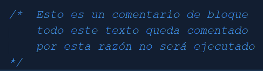

Los comentarios son pequeñas leyendas o aclaraciones no ejecutables que el programador agrega con la finalidad de que sean de ayuda a quién lea el código fuente de dicho programa. Además de esto son muy útiles para el mismo programador ya que brindan información adicional sobre elementos resuletos que pueden ser olvidados a futuro.
Los comentarios pueden ser de línea o de bloque, a continuación se muestran ejemplos de ambos casos.
Comentario de línea utilizando doble barra inclinada:
Comentario de bloque utilizando barra inclinada y asterisco para abrir y asterisco barra inclinada para cerrar

Quiere decir que no son compiladas o ejecutadas. Su utilidad es sólo para los programadores.